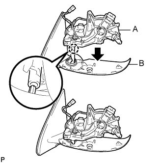
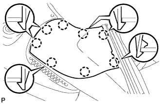
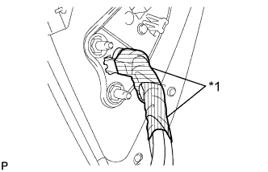

ТЕЛЕКАМЕРА (боковая) > УСТАНОВКА |
| 1. УСТАНОВИТЕ БОКОВУЮ ТЕЛЕКАМЕРУ В СБОРЕ |
Установите боковую телекамеру и закрепите ее 3 винтами.
Подсоедините разъем.
|  |
Введите в зацепление захват, как показано на рисунке, чтобы установить часть, обозначенную буквой A, на часть, обозначенную буквой B.
Закрепите деталь, обозначенную буквой C, как показано на рисунке.
Заверните 5 винтов.
Вверните 3 винта с помощью торцевого ключа с головкой "TORX" T25.
|  |
Введите в зацепление 8 захватов, чтобы установить нижнюю крышку.
Введите в зацепление 4 захвата, чтобы установить резиновое основание.
Заверните винт.
|  |
Наклейте 2 новых отрезка ленты так, чтобы они перекрывались.
| *1 | Лента |
| 2. УСТАНОВИТЕ ЛЕВЫЙ ПОВТОРИТЕЛЬ УКАЗАТЕЛЯ ПОВОРОТА В СБОРЕ |
Подсоедините разъем.
Установите лампу и закрепите ее 3 винтами.
| 3. УСТАНОВИТЕ КРЫШКУ НАРУЖНОГО ЗЕРКАЛА |
Установите крышку наружного зеркала.
 |
Вставьте ребро жесткости на наружной кромке крышки в канавку корпуса зеркала.
| *1 | Ребро |
 |
Убедитесь, что крышка и корпус зеркала правильно совмещены, а затем нажмите на наружный конец крышки, чтобы ввести в зацепление наружные захваты.
| *1 | Ребро |
 |
Убедившись в том, что ребро крышки должным образом входит в канавку корпуса зеркала, сожмите внутренний конец крышки и корпус зеркала, чтобы ввести в зацепление внутренние захваты.
 |
Нажмите на крышку в местах расположения 8 захватов, чтобы обеспечить правильное зацепление.
| 4. УСТАНОВИТЕ СТЕКЛО НАРУЖНОГО ЗЕРКАЛА ЗАДНЕГО ВИДА |
Для моделей с обогревателем зеркала:
Подсоедините 2 разъема.
 |
Введите в зацепление 4 захвата, чтобы установить стекло зеркала.
| 5. УСТАНОВИТЕ ЛЕВОЕ НАРУЖНОЕ ЗЕРКАЛО ЗАДНЕГО ВИДА В СБОРЕ |
Установите наружное зеркало заднего вида (Нажмите здесь).
| 6. ОТРЕГУЛИРУЙТЕ БОКОВУЮ ТЕЛЕКАМЕРУ В СБОРЕ |
Для моделей с монитором заднего вида:
Отрегулируйте положение боковой телекамеры (Нажмите здесь).
Для моделей с системой помощи при парковке:
Отрегулируйте положение боковой телекамеры (Нажмите здесь).